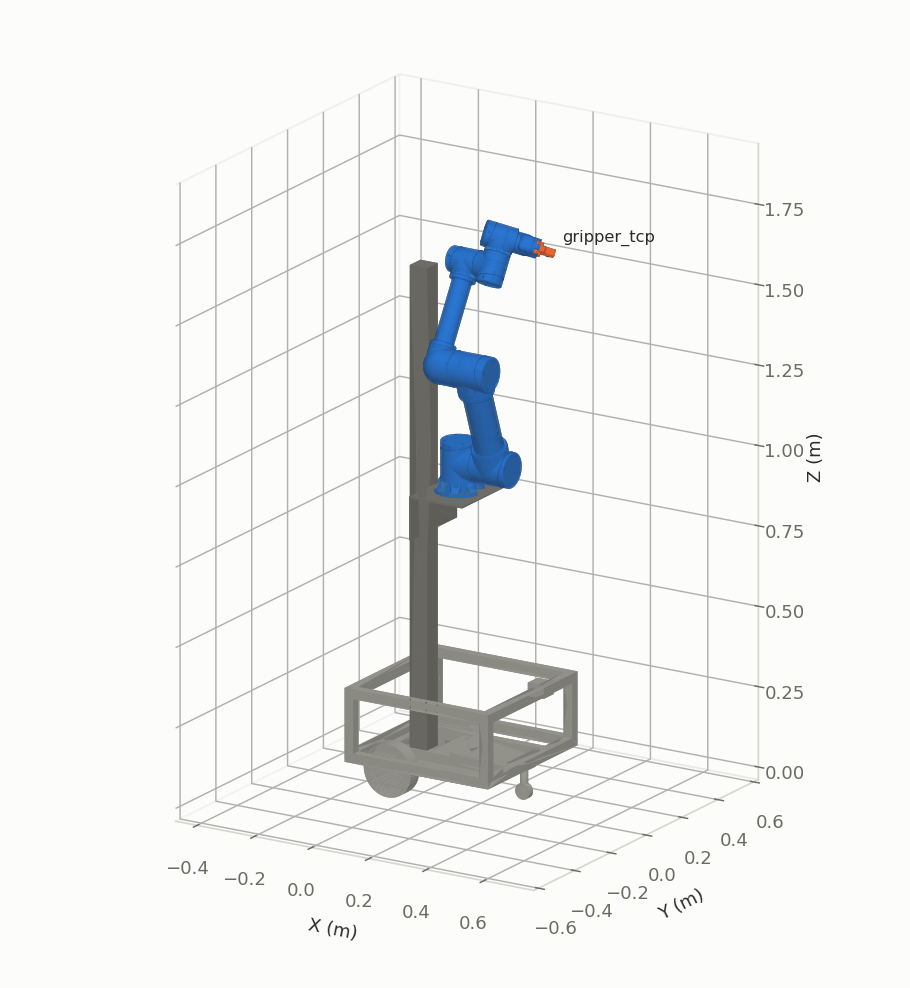
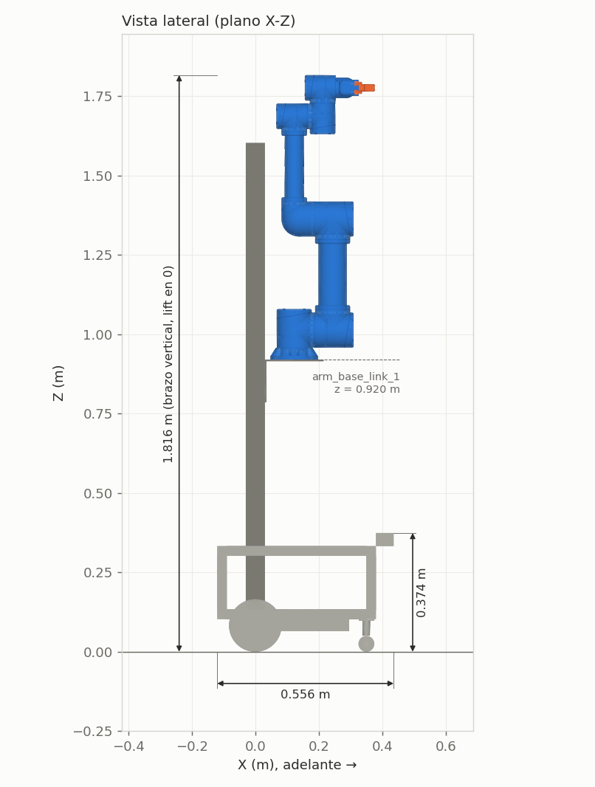
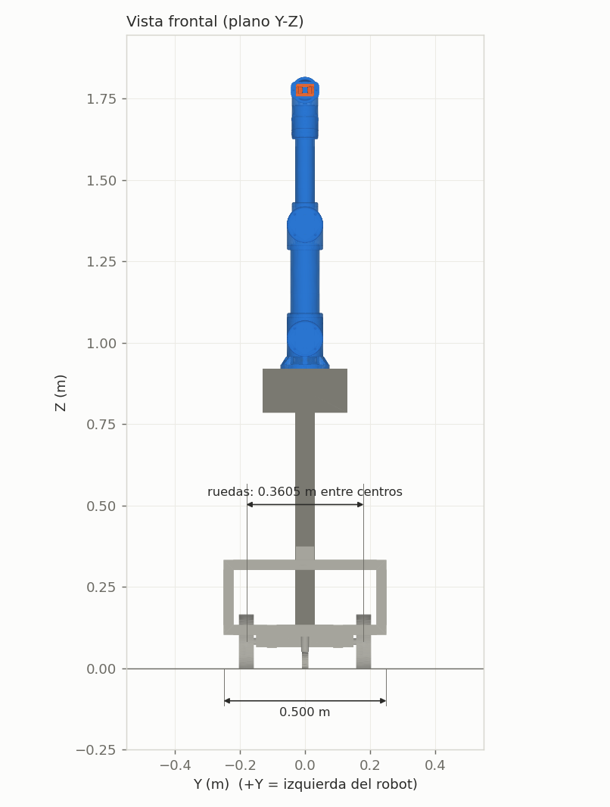
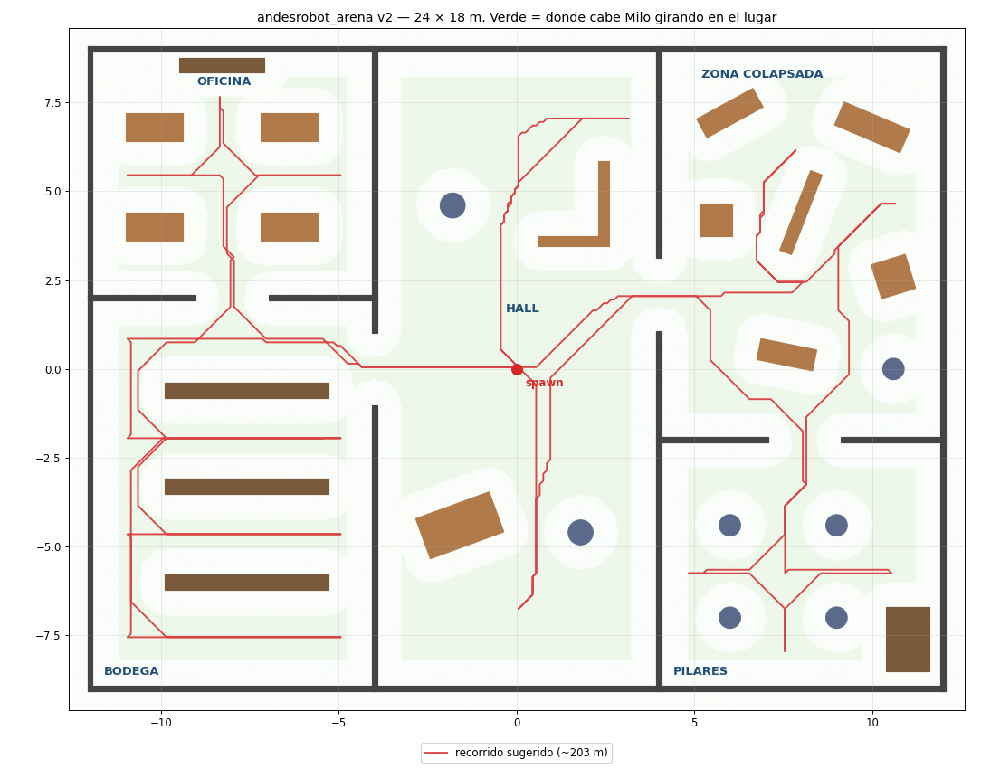
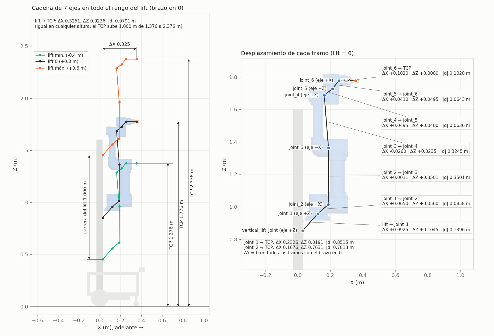
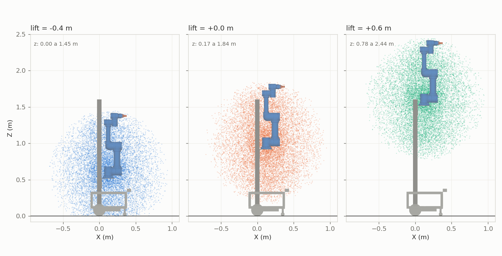
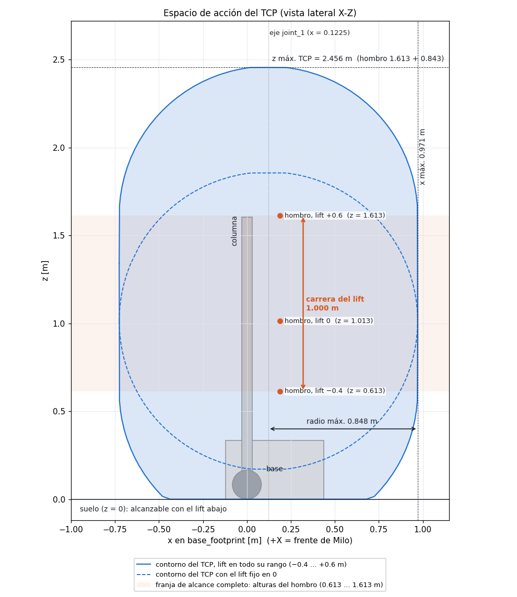

Informe técnico de milo_ws: cómo se ejecuta (Docker y scripts), cómo está modelado el robot, cómo funcionan la base en simulación y en el robot real, el filtro de seguridad y el mapeo, y en detalle la cinemática y el control del brazo. Todos los valores están tomados del código y de pruebas corridas sobre él.
Milo (andesrobot) es un manipulador móvil: una base diferencial con ruedas y electrónica de hoverboard, un RPLIDAR C1, una IMU, una columna vertical con un carro que sube y baja (el lift), un brazo de 6 articulaciones rotativas y una pinza de dos dedos.
milo_ws es el workspace del equipo. Contiene todo lo necesario para dos modos de trabajo con los mismos topics: simulación en Gazebo (en cualquier PC) y robot físico (en el portátil que va sobre Milo). Lo que funciona hoy:
La documentación del repositorio está en español y pensada para estudiantes: cada launch, xacro, YAML y script explica sus conceptos en comentarios. El README.md es un paso a paso; los detalles por paquete están en andesrobot_description/docs/ROBOT.md y andesrobot_arm/docs/BRAZO.md.
| Commit / cambio | Contenido |
|---|---|
| 72fc3a1 | Workspace de Milo: base, Gazebo, seguridad, SLAM, driver del hoverboard, Docker |
| 0fbd9af | Brazo: cinemática inversa con lift, control en Gazebo y marcador en RViz |
| 13cab44 | Documentación del brazo: CLAUDE.md, figuras y medidas generadas del URDF |
| Sin commit | CLAUDE.md (otros modos de los scripts y flujo de datos del brazo) y andesrobot_arm/rviz/arm.rviz (guardado desde RViz: perdió sus comentarios) |
La rama brazo-ik todavía no está en GitHub. El remoto es https://github.com/Ivan1721/milo_ws.git; falta configurar una credencial (llave SSH o token) para el push.
Todo corre dentro de un contenedor para que cualquier PC con Docker tenga el mismo entorno. La carpeta ros2_ws/ del PC se monta en el contenedor como /ros2_ws: el código se edita en el PC y se compila y ejecuta adentro. Lo compilado (install/) y los mapas quedan en el PC aunque el contenedor se borre.
| Archivo | Cuándo se usa | Qué agrega |
|---|---|---|
| compose.yaml | siempre | contenedor milo, red e IPC del host (ROS 2 se ve en la red), X11 para ventanas, /dev/dri, montaje de ros2_ws, caché de modelos de Gazebo |
| compose.nvidia.yaml | si hay nvidia-smi y el runtime de NVIDIA, salvo con cpu o software | la GPU NVIDIA |
| compose.robot.yaml | robot.sh | modo privilegiado y /dev completo (USB del lidar y del hoverboard) |
sim.sh y robot.sh comparten las funciones de docker/lib.sh. Si el workspace nunca se compiló, lo compilan al arrancar.
| Comando | Qué hace |
|---|---|
| ./sim.sh | Gazebo + Milo (brazo bloqueado) + filtro de seguridad + slam_toolbox + RViz |
| ./sim.sh brazo | Gazebo + Milo con brazo, lift y pinza controlados + IK + marcador en RViz |
| ./sim.sh cpu · software · sin-gazebo | sin NVIDIA · render por CPU (si las ventanas se ven negras) · sin ventana de Gazebo |
| ./sim.sh gpu | muestra con qué tarjeta dibuja el contenedor (llvmpipe = CPU) |
| ./sim.sh teleop | teclado → /cmd_vel_teleop (entrada del filtro de seguridad) |
| ./sim.sh mapa [nombre] | guarda el mapa en andesrobot_slam/maps/ (.pgm + .yaml) |
| ./sim.sh shell · build · stop | terminal en el contenedor · colcon build --symlink-install · apagar el contenedor |
| ./robot.sh | Milo físico: hoverboard + lidar + filtro + slam_toolbox (+ RViz si hay pantalla). Puertos con LIDAR=… HOVER=… |
| ./robot.sh puertos · rviz | lista los USB conectados (para las reglas udev) · RViz de mapeo, en Milo o en otro PC de la misma red |
No compilar con colcon build fuera de Docker dentro de ros2_ws. El contenedor reutiliza ros2_ws/install/ y un build del PC deja rutas que no existen adentro. Para correr sin Docker se compila en otra carpeta (--build-base /tmp/milo_build --install-base /tmp/milo_install).
Con --symlink-install, los .py, .xacro y .yaml editados se toman al relanzar; solo los archivos nuevos y el código C++ exigen ./sim.sh build.
| Paquete | Función |
|---|---|
| andesrobot_description | URDF/xacro, mallas STL, rsp.launch.py, display.launch.py (RViz con sliders). Única fuente de la geometría. |
| andesrobot_gazebo | sim.launch.py (mundo + robot_state_publisher + spawn, brazo bloqueado) y la arena de mapeo |
| andesrobot_bringup | launches de nivel superior: sim_mapping, robot, robot_mapping, rviz_mapping; controladores de la base real |
| andesrobot_safety | safety_filter: frena antes de los obstáculos. Matemática en logic.py (con pruebas) |
| andesrobot_slam | laser_filters (quita la columna del scan) + slam_toolbox, y la carpeta de mapas |
| andesrobot_arm | cinemática e IK, nodos arm_ik_node y arm_marker_node, controladores y launch del brazo en Gazebo, figuras |
| drivers/hoverboard_hardware_interface | plugin C++ de ros2_control para las ruedas reales (puerto serie) |
flowchart LR KB["teleop
teclado"] -- "/cmd_vel_teleop" --> SF["safety_filter"] LID["lidar
Gazebo o RPLIDAR C1"] -- "/scan" --> SF LID -- "/scan" --> LF["laser_filters"] LF -- "/scan_filtered" --> SLAM["slam_toolbox"] SF -- "/cmd_vel (sim)
/diff_drive_controller/cmd_vel_unstamped (real)" --> BASE["diff drive
plugin de Gazebo o
ros2_control + hoverboard"] BASE -- "/odom + TF odom→base_footprint" --> SLAM SLAM -- "/map + TF map→odom" --> RV["RViz"] SF -- "/safety/state
/safety/stop_zone" --> RV
En simulación los sensores y la tracción los dan plugins de Gazebo declarados en andesrobot.sim.xacro. En el robot real, sllidar_ros2 publica /scan y ros2_control con el driver del hoverboard publica /odom y la TF. Por encima de esa capa (seguridad, SLAM, RViz) todo es idéntico. El brazo tiene su propio flujo, descrito en la sección 17.
El modelo es andesrobot.urdf.xacro, que incluye otros archivos: colores y fricción (materials, gazebo), plugins de simulación (sim), el ros2_control de las ruedas reales (ros2_control) y el del brazo en Gazebo (arm_control). Sigue REP-103/105: +X adelante, +Y izquierda, +Z arriba.
En Fusion el robot se modeló girado 180° en Z. Por eso las uniones a nivel de la base llevan rpy="0 0 π" y las mallas tienen origins que las devuelven a su sitio (Fusion exporta cada malla en coordenadas del ensamblaje).
| Frame | Dónde | Lo usan |
|---|---|---|
| base_footprint | suelo, bajo el centro del eje de las ruedas; raíz del árbol | odometría, SLAM, filtro de seguridad, IK con lift |
| base_link | centro del eje de ruedas, z = 0.08255 m | chasis, ruedas, sensores |
| laser | centro óptico del C1: x = 0.408, z = 0.363 m | lidar (mismo frame en sim y real) |
| imu_link_1 | x = 0.13, z = 0.103 m | IMU |
| arm_base_link_1 | sobre el carro del lift; x = 0.1225, z = 0.920 m con el lift en 0 | IK de 6 ejes |
| gripper_tcp | 0.102 m hacia −X de link_6_1, entre los dedos | punta de la IK y marcador |
| Argumento | Defecto | Efecto |
|---|---|---|
| lock_arm | false | true = brazo, lift y dedos fixed. Lo usa la simulación de mapeo: sin motores, el brazo se desplomaría |
| simple_collision | false | true = cajas en vez de mallas, incluida una caja fija para el brazo (los eslabones del brazo quedan sin colisión) |
| sim_lidar / sim_imu | true | apagar sensores simulados para depurar |
| use_hardware / hoverboard_port | false / /dev/hoverboard | agrega el ros2_control del hoverboard (robot real) |
| arm_control / arm_controllers_file | false / vacío | brazo, lift y pinza con ros2_control en Gazebo |



Método de medición: el script andesrobot_arm/scripts/figuras.py coloca cada malla STL donde la pone el URDF y toma los extremos de sus vértices. Un vértice \(\mathbf v\) (en mm) del eslabón \(L\) queda en el mundo en:
\({}^{w}T_{L}\) es la pose del eslabón (cinemática directa, sección 11) y \(T_{\text{vis}}\) el <visual><origin> del URDF. Las dimensiones son \(\max_i p_{w,i} - \min_i p_{w,i}\) en cada eje.
| Medida | Valor | Nota |
|---|---|---|
| Largo (X) | 0.556 m | de −0.120 a +0.436 m (el frente es el lidar) |
| Ancho (Y) | 0.500 m | de −0.250 a +0.250 m |
| Altura, brazo vertical, lift en 0 / −0.4 / +0.6 m | 1.816 / 1.603 / 2.416 m | con el lift abajo, lo más alto es la columna |
| Altura de la base | 0.374 m | hasta el lidar; el chasis llega a 0.333 m |
| Rueda: diámetro / radio / ancho | 0.1651 / 0.08255 / 0.045 m | rueda de hoverboard de 6.5" |
| Separación entre ruedas | 0.3604 m | centro a centro de la banda (las mallas dan 0.3605; 0.3155 es entre orígenes de los joints) |
| Rueda loca | x = 0.35 m | radio de colisión 0.025 m, provisorio |
| Columna | 6 × 6 cm | sobre el eje de ruedas, de z = 0.103 a 1.603 m |
| Carrera del lift | −0.4 a +0.6 m | 150 N, 0.20 m/s; base del brazo entre z = 0.520 y 1.520 m |
Cada link tiene en su <inertial> la masa, el centro de masa y la inercia exportados de Fusion. El xacro no tiene una lista de componentes (motores, tornillería, electrónica): cada masa es la pieza sólida completa del CAD, con el material que tenía asignado allí.
| Brazo y lift | kg |
|---|---|
| arm_base_link_1 | 0.377 |
| link_1_1 | 0.434 |
| link_2_1 | 1.338 |
| link_3_1 | 0.756 |
| link_4_1 | 0.223 |
| link_5_1 | 0.225 |
| link_6_1 | 0.739 |
| dedos (2) | 0.331 |
| Brazo + pinza | 4.422 |
| lift_carriage_link_1 | 0.434 |
| Carga del lift | 4.856 |
| Base y columna | kg |
|---|---|
| base_link | 5.535 |
| vertical_column_link_1 | 5.724 |
| ruedas (2) | 2.042 |
| lidar, IMU, rueda loca | 0.231 |
| Total del CAD (con brazo y carro) | 18.390 |
| ballast_link | 12.000 |
| Total del modelo | 30.389 |
Lastre: con solo las masas del CAD, el centro de masa quedaba a 0.69 m y el robot se volcaba con unos 1.3 m/s². ballast_link representa baterías y electrónica: 12 kg en el piso del chasis (propiedad ballast_mass). Con él, el centro de masa baja a 0.45 m y el vuelco ocurre a unos 2.2 m/s² laterales y 2.7 m/s² al frenar, muy por encima de los 0.8 m/s² de aceleración del diff drive.
Torque de las ruedas: con 20 N·m por rueda el robot hacía "caballito" (más que el momento del peso sobre el eje, unos 37 N·m) y se volcaba. Se limitó a 5 N·m por rueda, de sobra para 0.8 m/s² (unos 1 N·m).
Las masas no están verificadas. Dependen del material asignado en Fusion: la columna pesa 5.7 kg en el CAD, posiblemente por el material por defecto.
Dividiendo la masa de cada link por el volumen de su malla se ve qué material tenía asignado en el CAD:
| Links | Densidad | Material que corresponde | Consecuencia |
|---|---|---|---|
| base, columna, ruedas, carro del lift, arm_base_link_1, link_1_1 … link_5_1 | 1.06 g/cm³ | ABS, macizo (100 % de relleno) | Las piezas impresas con relleno parcial pesan menos; los tubos, perfiles y metales no están representados |
| link_6_1 y los dos dedos (el gripper) | 7.85 g/cm³ | acero: el material por defecto de Fusion | El gripper pesa 1.07 kg en el URDF; impreso en ABS pesa menos de 0.23 kg |
Brazo colaborativo de 6 ejes impreso en 3D (PLA+, ABS o PA-CF), con tubos de ABS de 3" y 2". Ninguno de sus componentes de hardware está en las masas del URDF:
| Articulación | Motor (guía eléctrica) | Torque de retención | Corriente | Masa del motor |
|---|---|---|---|---|
| joint_1 | NEMA23 82 mm + reductor EBA-23 | 2.4 N·m | 4.0 A | ≈ 1.1 kg |
| joint_2 | NEMA23 82 mm + reductor EBA-23 | 2.4 N·m | 4.0 A | ≈ 1.1 kg |
| joint_3 | NEMA23 76 mm + reductor EBA-23 | 1.85 N·m | 2.8 A | ≈ 1.07 kg |
| joint_4 · joint_5 · joint_6 | NEMA17 60 mm + reductor EBA-17 | 0.65 N·m | 2.1 A | ≈ 0.41 kg c/u |
| Motores sin reductores | ≈ 4.5 kg | |||
El motor de cada articulación sale de la guía eléctrica del fabricante (págs. 22–27); torque y corriente, de su documento de ensamblaje (pág. 4). Control: Arduino MEGA 2560 + 6 drivers TB6600 + fuente 24 V 15 A, que van en la base, no en el brazo.
Masas: el datasheet del NEMA23 de 82 mm (23HS32-4004S, que coincide en 2.4 N·m y 4.0 A) no trae la masa, así que se extrapoló. Las otras dos salen de las tablas de los datasheets CUI/LIN del proyecto para el largo de cuerpo más cercano (3.10" → 2.35 lb; 2.34" → 0.90 lb). Los documentos del fabricante no traen modelo Denavit-Hartenberg ni medidas de los eslabones. Todo está guardado en andesrobot_arm/docs/hardware/.
Solo los motores pesan más que todo el brazo del URDF (4.42 kg), y faltan los reductores EBA. Los NEMA23 van en las tres primeras articulaciones, las que más cargan.
Pinza paralela de piñón y cremalleras, movida por un servo MG99x (en la lista de materiales: "MG99 or +"). Sus planos y mallas confirman que es el gripper del URDF: el cuerpo mide 85 × 65 × 52 mm, igual que link_6_1 (85 × 65 mm en Y-Z), y las piezas de cada dedo suman 21.1 cm³, exactamente el volumen de cada dedo del URDF.
| EBG-20 | Valor | Cómo sale |
|---|---|---|
| Piezas impresas (15) | 156 cm³ | volumen de sus mallas STL |
| Masa impresa en ABS, maciza | 0.17 kg | 156 cm³ × 1.06 g/cm³; con relleno parcial pesa menos |
| Servo MG99x + tornillos e insertos M3/M4 | ≈ 0.07 kg | servo MG996R típico ≈ 55 g |
| Gripper completo, estimado | ≤ 0.23 kg | máximo, con piezas macizas; contra 1.07 kg en el URDF |
./sim.sh corre sim_mapping.launch.py, que junta tres launches: sim.launch.py (Gazebo, robot_state_publisher con lock_arm:=true y simple_collision:=true, y el spawn de Milo 2 cm sobre el suelo), el filtro de seguridad y el mapeo, más RViz. Todos usan el reloj de Gazebo (use_sim_time).
| Plugin | Publica / recibe | Parámetros |
|---|---|---|
| RPLIDAR C1 (ray_sensor) | /scan, frame laser | 360°, 500 muestras (0.72°), 10 Hz, 0.05–12 m, ruido gaussiano σ = 12 mm |
| IMU | /imu | 100 Hz, ruido σ = 2·10⁻⁴ rad/s (giro) y 1.7·10⁻² m/s² (aceleración) |
| Diff drive | recibe /cmd_vel; publica /odom y TF odom→base_footprint | 50 Hz, separación 0.3604 m, diámetro 0.1651 m, 5 N·m y 0.8 m/s² por rueda |
| Joint states | /joint_states (30 Hz) | ruedas; las del brazo solo si no está bloqueado ni lo maneja ros2_control |
Fricción de las ruedas μ = 1.2 con contacto rígido (kp = 10⁶, kd = 100); la rueda loca tiene μ = 0 para que deslice. Física ODE a 1 ms por paso, en tiempo real.

./robot.sh corre robot_mapping.launch.py = robot.launch.py + el mismo mapeo que en simulación (con reloj real) + RViz opcional. Antes de arrancar revisa que existan los dos puertos serie.
Lo que hace el diff_drive_controller con el comando \((v, \omega)\) del robot. Al revés, integra la velocidad de las ruedas para la odometría (/odom y TF odom→base_footprint, igual que el plugin de Gazebo). Límites: 0.4 m/s y 1.0 rad/s; 0.8 m/s² y 1.5 rad/s². Si no recibe comandos en 0.5 s, se detiene.
Firmware hoverboard-firmware-hack-FOC (VARIANT_USART) a 115200 baudios. El driver se basa en DataBot-Labs/hoverboard_ros2_control (Apache-2.0). Cada mensaje empieza con 0xABCD y termina con un XOR de los campos como checksum. Se envían steer y speed (diferencia y promedio de las ruedas); el hoverboard devuelve rpm, contadores Hall, voltaje de batería y temperatura.
| Calibración (probada en Milo) | Valor | Por qué |
|---|---|---|
| Sentido | izq = −der_cmd, der = −izq_cmd | el avance salía invertido y el giro bien: esto invierte solo la traslación |
| Encoders | cruzados y con signo negado | consistente con lo anterior |
| Velocidad máxima por rueda | 6 km/h (1.67 m/s) | tope duro en el driver |
| Rampa | 0.5 m/s² | sin arranques ni frenadas bruscas (de 6 km/h a 0 en unos 3.3 s) |
| Encoder | 90 pasos/vuelta | 15 pares de polos × 6 estados Hall (4° por paso) |
sllidar_node a 460800 baudios, modo Standard, frame laser (el mismo de la simulación). El lidar y el hoverboard aparecen como /dev/ttyUSBx con un número que cambia según el orden de conexión. Las reglas de docker/udev/99-milo.rules los fijan como /dev/rplidar y /dev/hoverboard; todavía tienen valores CAMBIAR_… por completar con ./robot.sh puertos. Mientras tanto se pasan a mano con LIDAR=/dev/ttyUSB0 HOVER=/dev/ttyUSB1 ./robot.sh.
El filtro de seguridad envía su salida a /diff_drive_controller/cmd_vel_unstamped. La primera prueba se hace con las ruedas en el aire: con i ambas ruedas avanzan y con j gira a la izquierda.
safety_filter se interpone entre el teclado y las ruedas: recibe /cmd_vel_teleop y /scan, y a 20 Hz publica la velocidad segura. Es igual en simulación y en el robot. La parte ROS está en safety_filter.py; la matemática, en logic.py, que se prueba sin ROS.
Cada scan se pasa a puntos \((x, y)\) en base_footprint con la TF del lidar (se lee una vez). Se descartan los puntos dentro de la caja del robot + 2 cm, que son lecturas del propio Milo (la columna).
Solo cuentan los puntos dentro del corredor (ancho del robot + side_margin a cada lado) y en la dirección de avance. Si va hacia adelante, solo importa lo de adelante; si retrocede, lo de atrás. Así siempre puede alejarse de un obstáculo.
\(d\) es la distancia libre desde el borde del robot (frente en x = 0.44 m, cola en x = −0.12 m) hasta el punto más cercano del corredor. Con \(d_{\text{stop}} = 0.30\) m y \(d_{\text{slow}} = 0.70\) m, a 0.5 m va a la mitad de la velocidad pedida.
Radio que barre la esquina más lejana al girar en el lugar. Si hay un punto a menos de \(r_{\text{giro}} + 0.15 = 0.656\) m del centro, se bloquea el giro (\(\omega = 0\)).
| Parámetro (safety.yaml) | Valor | Efecto |
|---|---|---|
| stop_distance / slow_distance | 0.30 / 0.70 m | se detiene / empieza a frenar |
| side_margin | 0.10 m | holgura a cada lado del corredor |
| rotation_clearance | 0.15 m | holgura para girar en el lugar |
| max_linear / max_angular | 0.4 m/s / 1.0 rad/s | recorte del comando |
| footprint_x_min / x_max / half_width | −0.12 / 0.44 / 0.25 m | caja del robot, medida en las mallas |
| scan_timeout | 0.5 s | sin lidar, se detiene |
| cmd_timeout | 0 (apagado) | mantiene el último comando (el teleop por teclado no repite) |
Publica siempre, aunque sea velocidad 0: si el nodo se cae, el diff_drive_controller deja de recibir y se detiene a los 0.5 s. También publica /safety/state (texto, solo cuando cambia) y /safety/stop_zone (rectángulo para RViz).
mapping.launch.py se usa igual en simulación y en el robot (solo cambia use_sim_time).
| Parámetro de slam_toolbox | Valor |
|---|---|
| Resolución del mapa | 0.05 m |
| Rango láser usado | 0.15 – 12 m |
| Procesar un scan nuevo tras moverse / girar | 0.25 m / 0.25 rad |
| Actualización del mapa | cada 2 s |
| Cierre de lazos | activo, búsqueda hasta 3 m |
| Solver | Ceres, Levenberg-Marquardt |
El mapa se guarda con ./sim.sh mapa nombre (o ./robot.sh mapa), que llama a map_saver_cli y deja nombre.pgm + nombre.yaml en andesrobot_slam/maps/.
El trabajo del brazo empezó en un workspace aparte (preparacion_ws) y se migró a milo_ws, cuya descripción tiene exactamente la misma cadena del brazo. No se duplicó el URDF: se agregó lo necesario a andesrobot_description y el resto va en andesrobot_arm.
La cadena va de arm_base_link_1 a gripper_tcp. Cada articulación tiene un desplazamiento fijo (origin) respecto al eslabón anterior y un eje de giro:
| Articulación | Tipo | Desplazamiento xyz (m) | Distancia | Eje local | Eje en el mundo (q = 0) | Límites |
|---|---|---|---|---|---|---|
| vertical_lift_joint | prismática | (−0.06, 0, 0.75) | — | +Z | +Z | −0.4 … 0.6 m |
| joint_1 | rotativa | (0, 0, 0.037) | 0.037 m | +Z | +Z | ±π (provisorio) |
| joint_2 | rotativa | (−0.065, 0, 0.056) | 0.086 m | −X | +X | ±π (provisorio) |
| joint_3 | rotativa | (−0.001077, 0, 0.350077) | 0.350 m | +X | −X | ±π (provisorio) |
| joint_4 | rotativa | (0.026, 0, 0.3235) | 0.325 m | −X | +X | ±π (provisorio) |
| joint_5 | rotativa | (−0.0495, 0, 0.04) | 0.064 m | +Z | +Z | ±π (provisorio) |
| joint_6 | rotativa | (−0.041, 0, 0.0495) | 0.064 m | −X | +X | ±π (provisorio) |
| gripper_tcp_joint | fija | (−0.102, 0, 0) | 0.102 m | — | — | — |
El eje en el mundo difiere del local por la corrección de 180° en Z de la base. El brazo mide 0.350 m (joint_2 → joint_3) y el antebrazo 0.325 m (joint_3 → joint_4). Los límites provisorios están en las propiedades arm_lower, arm_upper, arm_effort (20 N·m) y arm_velocity (1 rad/s).

En la cadena de 7 ejes el prismático es la primera articulación: en el código se llama vertical_lift_joint, y joint_1 es la base giratoria. Las posiciones están en base_footprint (suelo bajo el eje de las ruedas), con todas las articulaciones en 0 y el lift en 0. En esa pose el brazo apunta hacia arriba y la pinza hacia +X.
| Punto | X (m) | Y (m) | Z (m) |
|---|---|---|---|
| vertical_lift_joint | 0.0300 | 0 | 0.8528 |
| joint_1 | 0.1225 | 0 | 0.9573 |
| joint_2 | 0.1875 | 0 | 1.0133 |
| joint_3 | 0.1886 | 0 | 1.3634 |
| joint_4 | 0.1626 | 0 | 1.6869 |
| joint_5 | 0.2121 | 0 | 1.7269 |
| joint_6 | 0.2531 | 0 | 1.7764 |
| gripper_tcp | 0.3551 | 0 | 1.7764 |
Cada tramo se descompone en dos partes. La parte perpendicular a los ejes es el largo útil del eslabón. La parte a lo largo del eje es un desplazamiento que corre el plano en que trabaja el brazo. Cuando dos ejes se cortan, no hay largo perpendicular.
| Tramo | ΔX | ΔY | ΔZ | Distancia | Ejes | Largo útil / desplazamiento |
|---|---|---|---|---|---|---|
| lift → joint_1 | 0.0925 | 0 | 0.1045 | 0.1396 | paralelos (Z) | 0.0925 horizontal hasta el eje de joint_1; 0.1045 vertical |
| joint_1 → joint_2 | 0.0650 | 0 | 0.0560 | 0.0858 | se cortan (Z, X) | 0.056 de altura; 0.065 corre el plano del brazo respecto al eje de joint_1 |
| joint_2 → joint_3 | 0.0011 | 0 | 0.3501 | 0.3501 | paralelos (X) | 0.3501 brazo; 0.0011 a lo largo del eje |
| joint_3 → joint_4 | −0.0260 | 0 | 0.3235 | 0.3245 | paralelos (X) | 0.3235 antebrazo; −0.026 a lo largo del eje |
| joint_4 → joint_5 | 0.0495 | 0 | 0.0400 | 0.0636 | se cortan (X, Z) | 0.0495 a lo largo de joint_4; 0.040 a lo largo de joint_5 |
| joint_5 → joint_6 | 0.0410 | 0 | 0.0495 | 0.0643 | se cortan (Z, X) | 0.0495 a lo largo de joint_5; 0.041 a lo largo de joint_6 |
| joint_6 → gripper_tcp | 0.1020 | 0 | 0 | 0.1020 | sobre el eje de joint_6 | 0.102: el TCP está en el eje de giro de la pinza |
| Desde | ΔX | ΔY | ΔZ | En línea recta (pose cero) | Suma de tramos |
|---|---|---|---|---|---|
| vertical_lift_joint (prismático) | 0.3251 | 0 | 0.9236 | 0.9791 | 1.1299 |
| joint_1 (base giratoria) | 0.2326 | 0 | 0.8191 | 0.8515 | 0.9903 |
| joint_2 (hombro) | 0.1676 | 0 | 0.7631 | 0.7813 | 0.9045 |
La distancia más grande que puede haber entre el hombro y el TCP es 0.843 m (buscada en todas las posturas). Es menor que la suma de tramos (0.905 m) porque los desplazamientos a lo largo de los ejes y la muñeca no se alinean nunca en una sola recta. En la pose cero, ΔY = 0 porque con joint_1 = 0 el brazo se dobla en el plano Y-Z: la componente Y aparece al mover joint_2 y joint_3.
Los orígenes están en los acoplamientos. Cada origin del URDF es el punto donde Fusion definió la unión entre dos piezas, no necesariamente el centro del motor. Sobre el propio eje, ese punto no cambia el movimiento. Pero los desplazamientos a lo largo de los ejes (0.065, 0.0011, −0.026, 0.0495, 0.041 m) sí corren el plano del brazo, así que conviene confirmarlos en el robot real.
Para qué: calcular dónde queda la pinza dados los ángulos. La usan la inversa, el Jacobiano, las mediciones y las figuras.
Método: producto de transformaciones homogéneas leídas del URDF procesado (ArmKinematics en kinematics.py, solo numpy). No hay tabla Denavit-Hartenberg: el código recorre el URDF desde la punta hasta la base, así que un cambio en el xacro se refleja solo. Lee el xacro instalado con lock_arm:=false.
\(T_{o,i}\) es el origin fijo de la articulación \(i\) y \(M_i(q_i)\) su movimiento. Las articulaciones fijas aportan solo \(T_{o,i}\).
Convención URDF: roll \(\phi\), pitch \(\theta\), yaw \(\psi\), en ejes fijos.
Fórmula de Rodrigues para articulaciones rotativas con eje unitario \(\mathbf k\); traslación a lo largo de \(\mathbf k\) para las prismáticas (el lift). \([\mathbf k]_\times\) es la matriz antisimétrica del producto cruz.
Con todo en cero, el TCP queda en \((-0.2326,\ 0,\ 0.8561)\) m respecto a arm_base_link_1 (lo comprueba una prueba) y en \((0.3551,\ 0,\ 1.7764)\) m respecto a base_footprint con el lift en 0.
Cuando se manda una pose, lo que llega a ella es el TCP. El origen de link_6_1 está 10 cm detrás de los dedos; el TCP es el centro de la zona de agarre. Se midió colocando las mallas de los dedos en el marco de link_6_1 y analizándolas por cortes a lo largo de X.
| Resultado (marco link_6_1) | Valor |
|---|---|
| Dirección en la que apunta la pinza | −X |
| Punta de los dedos | x = −0.1224 m |
| Cara interna de los dedos (contacto) | x = −0.083 a −0.121 m |
| Dedo derecho / izquierdo en la punta | y ∈ [0.0085, 0.019] / [−0.019, −0.0085] m |
| Simetría en Z | z ∈ [−0.0106, 0.0104] m |
| Dirección de cierre | eje Y |
| TCP elegido (mitad de la cara de contacto) | (−0.102, 0, 0) m |
Apertura entre las caras internas en función de right_finger_joint; el izquierdo lo imita con multiplicador −1 (mimic). Con \(q_f = 0\) quedan 17 mm.
En el xacro, gripper_tcp es un eslabón sin masa unido a link_6_1 por una articulación fija. Para poner el TCP en la punta de los dedos basta cambiar su origin a −0.1224.
Relaciona velocidades articulares con la velocidad del TCP; la cinemática inversa lo usa en cada iteración. Es el Jacobiano geométrico, calculado a partir de los marcos de cada articulación.
\(\mathbf z_i = R_i\,\mathbf k_i\) es el eje de la articulación \(i\) en el marco base, \(\mathbf p_i\) su posición y \(\mathbf p_e\) la del TCP.
Verificación: la parte lineal coincide con diferencias finitas centradas con tolerancia \(10^{-8}\). La parte angular se valida de forma indirecta con las pruebas de cinemática inversa.
Dada una pose deseada \(T_d = (R_d, \mathbf p_d)\), encontrar \(\mathbf q\). Como la muñeca no es esférica, se usa mínimos cuadrados amortiguados (damped least squares, DLS), un método iterativo que se comporta bien cerca de singularidades.
El error de orientación es el vector de rotación (eje × ángulo) que lleva la orientación actual a la deseada.
Si \(\theta \approx 0\) el resultado es cero; si \(\theta \approx \pi\) el eje se obtiene de la parte simétrica de \(R\), porque la fórmula se indefine.
Solución de \(\min_{\Delta\mathbf q}\ \lVert J\Delta\mathbf q - \mathbf e\rVert^2 + \lambda^2\,\Delta\mathbf q^\top W \Delta\mathbf q\). \(\lambda\) evita pasos enormes cerca de singularidades. \(W = \operatorname{diag}(w_i)\) da un costo a cada articulación: una con más peso se mueve menos.
Con rangos de vuelta completa (los ±π provisorios) el ángulo da la vuelta en vez de recortarse; si no, una solución cerca de −π se quedaba pegada al límite.
Se itera hasta \(\lVert\mathbf e_p\rVert < 10^{-4}\) m y \(\lVert\mathbf e_R\rVert < 10^{-3}\) rad. El primer intento parte de la posición actual, para que la solución quede cerca. Si no converge, se reintenta desde configuraciones aleatorias dentro de los límites. Si ninguno converge, se devuelve el mejor (menor \(\lVert\mathbf e_p\rVert + 0.1\,\lVert\mathbf e_R\rVert\)) marcado como fallido y el nodo no mueve el brazo.
| Parámetro | Valor | Efecto |
|---|---|---|
| Amortiguamiento \(\lambda\) | 0.01 | estabilidad cerca de singularidades |
| Paso máximo \(\Delta_{\max}\) | 0.5 | evita saltos grandes |
| Iteraciones por intento / reinicios | 200 / 20 | robustez ante mínimos locales |
| Tolerancia de posición / orientación | 0.1 mm / 0.057° | criterio de éxito |
| Modo solo posición | opcional | usa solo las 3 filas de posición |
Conversión entre cuaterniones de ROS y matrices. El cuaternión se normaliza antes. Se verifica con 50 rotaciones aleatorias (ida y vuelta, error < \(10^{-9}\)).
Con el lift fijo el brazo cubre unos 1.66 m de altura; con él, la pinza va del suelo a 2.4 m. La cadena empieza en base_footprint (supone la base quieta) y contiene vertical_lift_joint + joint_1…6. Con 7 articulaciones para 6 restricciones hay infinitas soluciones; los pesos \(W\) eligen. Al lift se le da \(w = 10\) y a las demás \(w = 1\).
Para elegir el peso se probaron 30 correcciones pequeñas (pose actual desplazada unos 5 cm al azar, desde posturas aleatorias con el lift en 0), con la cadena de preparacion_ws, idéntica en brazo y lift:
| Peso del lift | Resueltas | Movimiento del lift (mediana) | Máximo |
|---|---|---|---|
| 3 | 26 / 30 | 4.2 cm | 24.7 cm |
| 10 (elegido) | 24 / 30 | 2.4 cm | 40.0 cm |
| 30 | 30 / 30 | 2.7 cm | 46.6 cm |
Las diferencias son modestas: el peso afecta sobre todo al primer intento. Con reinicios aleatorios el lift puede saltar más. Con pesos 1, 3 y 10 se resolvieron 40 de 40 poses alcanzables aleatorias, y un descenso de 30 cm con el brazo vertical se resolvió moviendo el lift −0.30 m. El lift va en el mismo controlador de trayectorias que el brazo, para que ambos se muevan sincronizados.
Método (Monte Carlo): se muestrean configuraciones uniformes dentro de los límites, se calcula \(\mathbf p = \text{FK}(\mathbf q)\) y se toman los extremos. 60 000 muestras para el alcance al frente y 12 000 por panel en la figura. Se descartan puntos bajo el suelo.

Como la distancia hombro–TCP llega a 0.843 m en cualquier dirección, el espacio de acción es aproximadamente una cápsula: una esfera de ese radio alrededor del hombro, estirada a lo largo de la carrera del lift. Los extremos salen de buscar el máximo en cada dirección, no solo de muestreo aleatorio.

| Magnitud | Valor | Cómo sale |
|---|---|---|
| Carrera del prismático | 1.000 m (−0.4 … +0.6) | límite del URDF; 150 N, 0.20 m/s (la IK usa 0.1 m/s) |
| Altura de joint_1 | 0.557 … 1.557 m | 0.9573 + carrera |
| Altura del hombro (joint_2) | 0.613 … 1.613 m | 1.0133 + carrera |
| TCP en pose cero | z = 1.376 … 2.376 m | x = 0.355 m fijo |
| Distancia máx. hombro → TCP | 0.843 m | búsqueda en todas las posturas |
| Radio horizontal máx. alrededor del eje de joint_1 | 0.848 m | 0.843 más el corrimiento del plano del brazo |
| Alcance al frente desde base_footprint | 0.971 m | eje de joint_1 en x = 0.1225 + 0.848 |
| Alcance hacia atrás | −0.726 m | geométrico; la columna está en el camino |
| Altura máx. del TCP | 2.456 m | 1.613 + 0.843 |
| Altura mín. del TCP | suelo (0 m) | 0.613 − 0.843 < 0: el lift abajo permite llegar al suelo |
| Franja de alcance completo | 0.613 … 1.613 m | a esas alturas el radio de 0.848 m está disponible entero |
| Volumen aproximado | ≈ 4.7 m³ | cápsula de radio 0.848 m y 1.0 m de carrera, menos lo que queda bajo el suelo; sin descontar el robot |
| Lift | Hombro (z) | Alturas del TCP | Alcance horizontal máx. |
|---|---|---|---|
| −0.4 m | 0.61 m | suelo … 1.46 m | 0.97 m |
| 0.0 m | 1.01 m | 0.17 … 1.86 m | 0.97 m |
| +0.6 m | 1.61 m | 0.77 … 2.46 m | 0.97 m |
| Combinado | suelo … 2.46 m | 0.97 m |
| Altura del objetivo | Alcance al frente (x máx.) | Más allá del frente del robot (x = 0.436) |
|---|---|---|
| Suelo | 0.52 m | ~8 cm |
| 0.30 m | 0.77 m | ~33 cm |
| 0.75 m (mesa típica) | 0.89 m | ~45 cm |
| 1.00 m | 0.93 m | ~50 cm |
Cifras aproximadas. El muestreo aleatorio subestima un poco los máximos (sobre todo a ras del suelo) y no considera choques ni límites reales (usa los ±π provisorios). El alcance se mide desde base_footprint; la base del brazo está 0.12 m más adelante.
./sim.sh brazo corre arm_sim.launch.py. Este launch procesa el xacro con lock_arm:=false arm_control:=true y mallas como colisión, abre la misma arena, pone a Milo, arranca los controladores solo si el spawn terminó bien y lanza los dos nodos y RViz.
flowchart LR RV["RViz
marcador interactivo"] -- "/arm_target_marker/feedback" --> MK["arm_marker_node"] CLI["ros2 topic pub"] -- "/arm_target_pose" --> IK MK -- "/arm_target_pose" --> IK["arm_ik_node
IK de 7 ejes"] IK -- "FollowJointTrajectory" --> AC["arm_controller
lift + joint_1..6"] GC["gripper_controller
right_finger_joint"] AC --> HW["gazebo_ros2_control
GazeboSystem"] GC --> HW HW --> JSB["joint_state_broadcaster"] JSB -- "/joint_states" --> IK JSB -- "/joint_states" --> RSP["robot_state_publisher"] RSP -- "/tf" --> IK RSP -- "/tf" --> MK
Recibe geometry_msgs/PoseStamped en /arm_target_pose, en cualquier marco de TF. La transforma al marco base de la cadena, resuelve la IK desde la posición actual (/joint_states) y manda una trayectoria de un punto a /arm_controller/follow_joint_trajectory. La duración la marca la articulación más lenta:
| Parámetro | Por defecto | Qué hace |
|---|---|---|
| use_lift | true | false = IK de 6 ejes en arm_base_link_1, el lift no se mueve |
| lift_weight | 10.0 | peso \(w\) del lift en la IK |
| position_only | false | ignora la orientación del objetivo |
| max_joint_velocity / max_lift_velocity | 0.5 rad/s / 0.1 m/s | velocidades para calcular la duración |
| min_duration | 1.0 s | duración mínima de cada movimiento |
Crea un marcador interactivo sobre gripper_tcp, con flechas para mover y anillos para girar en X, Y y Z. Al soltar el mouse publica la pose en /arm_target_pose, en base_footprint (así el marcador no sube y baja con el lift). Con clic derecho: “Enviar objetivo” y “Volver a la pinza”. La pinza no pasa por la IK: se manda directo a gripper_controller.
Para qué: ver el objeto desde la pinza, medir su posición 3D y mandarla a la cinemática inversa. La cámara es una Orbbec Gemini Plus. Esta sección es una guía de implementación: la cámara todavía no está en el workspace. El sensor de Gazebo propuesto y sus topics sí se probaron dentro del contenedor de Milo con un modelo de prueba.
flowchart LR CAM["Gemini Plus
Gazebo o real"] -- "image_raw (color)
depth/image_raw
points" --> DET["detector del objeto
(por hacer)"] DET -- "/arm_target_pose
PoseStamped" --> IK["arm_ik_node"] TF["TF: link_6_1 → cámara
(robot_state_publisher)"] --> DET TF --> IK IK -- "FollowJointTrajectory" --> AC["arm_controller"]
La Gemini Plus es una cámara de luz estructurada binocular: un proyector infrarrojo dibuja un patrón y dos sensores infrarrojos lo ven desde dos posiciones. Un chip de la propia cámara (MX6000) calcula la profundidad, así que entrega directamente la imagen de profundidad y la nube de puntos; no hace falta calcular la disparidad en el PC.
| Especificación | Valor |
|---|---|
| Rango de profundidad | 0.25 – 2.5 m |
| Campo de visión de profundidad | H 67.9° · V 45.3° |
| Profundidad | USB 3.0: 1280×800 @ 30 fps, 640×400 @ 60 fps (USB 2.0: 1280×800 @ 7 fps, 640×400 @ 30 fps) |
| Precisión | 5 mm a 1 m |
| Color (RGB) | H 71° · V 56.7°; hasta 1920×1080 @ 30 fps por USB 3.0 |
| Conexión y consumo | USB 3.0, < 2.2 W, láser clase 1 |
| Medidas | 76 mm de ancho × 20 mm de fondo; 68 mm de alto con su soporte metálico con bisagra (inclinación ajustable, agujeros Φ4 mm a 30 mm) |
| Masa | 0.122 kg (dato del vendedor) |
La distancia mínima de 0.25 m cambia el plan. Montada sobre la pinza, la cámara queda unos 8 cm detrás del TCP: no ve el objeto en el momento del agarre. El uso correcto es en dos fases: (1) desde una pose de pre-agarre a 0.3 m o más, la cámara mide la posición del objeto; (2) el brazo se acerca y cierra la pinza con esa medida, sin ver. Con 76 mm de ancho cabe sobre la cara superior de link_6_1 (85 mm en Y), y su soporte con bisagra permite darle la inclinación hacia abajo del paso 2. Su masa se suma al último eslabón.
Alternativa: montarla fija en el carro del lift o en la columna (cámara "eye-to-hand"), mirando la zona de trabajo frente a Milo. A esa distancia el rango de 0.25–2.5 m le calza mejor y no carga el brazo; a cambio, el brazo puede taparle el objeto. Los pasos siguientes sirven para las dos ubicaciones cambiando solo el parent del joint.
Fuente: la ficha técnica y el plano de medidas de la página de Hubot, guardados con los tutoriales y el driver de Hiwonder en andesrobot_arm/docs/hardware/camara_gemini_plus/. Orbbec no publica datasheet ni modelo 3D de este modelo.
Medidas de la pinza en el marco de link_6_1, tomadas de sus mallas: el cuerpo va de x = −0.0725 a 0 (±0.0425 en Y, ±0.0325 en Z); los dedos llegan a x = −0.1224, cierran en Y y no pasan de ±0.021 en Z. La pinza apunta hacia −X. Una cámara sobre la cara superior (+Z), mirando hacia −X e inclinada hacia abajo, no queda tapada por los dedos.
Se usan dos frames:
Con rpy="0 p π" el eje de la cámara apunta hacia −X (hacia donde apunta la pinza) y baja un ángulo \(p\). Ejemplo: xyz = (−0.040, 0, 0.055) y \(p\) = 0.35 rad (20°). Así el TCP queda 21.5° bajo el eje de la cámara, dentro de su FOV vertical (±22.6°), y un objeto a 0.3 m o más delante de la pinza queda en el rango de profundidad. Son valores de partida: se reemplazan por los del soporte real.
<!-- andesrobot.urdf.xacro, después de gripper_tcp_joint -->
<!-- gripper_camera:=true -> Orbbec Gemini Plus sobre la pinza (por defecto no, así los
launches actuales no cambian). -->
<xacro:arg name="gripper_camera" default="false"/>
<xacro:if value="$(arg gripper_camera)">
<!-- Datos de la cámara (plano de Hubot): 76 mm de ancho y 20 mm de fondo; el alto del
cuerpo sin soporte (~30 mm) es aproximado: medirlo en la cámara real. -->
<xacro:property name="cam_mass" value="0.122"/> <!-- [kg] -->
<xacro:property name="cam_sx" value="0.020"/> <!-- [m] fondo, ancho y alto -->
<xacro:property name="cam_sy" value="0.076"/>
<xacro:property name="cam_sz" value="0.030"/>
<link name="gripper_camera_link">
<inertial>
<mass value="${cam_mass}"/>
<inertia ixx="${cam_mass/12*(cam_sy**2 + cam_sz**2)}" ixy="0" ixz="0"
iyy="${cam_mass/12*(cam_sx**2 + cam_sz**2)}" iyz="0"
izz="${cam_mass/12*(cam_sx**2 + cam_sy**2)}"/>
</inertial>
<visual><geometry><box size="${cam_sx} ${cam_sy} ${cam_sz}"/></geometry>
<material name="caster_black"/></visual>
<collision><geometry><box size="${cam_sx} ${cam_sy} ${cam_sz}"/></geometry></collision>
</link>
<!-- Sobre la cara superior de link_6_1, mirando hacia -X (como la pinza), 20° hacia abajo. -->
<joint name="gripper_camera_joint" type="fixed">
<origin xyz="-0.040 0 0.055" rpy="0 0.35 ${pi}"/>
<parent link="link_6_1"/>
<child link="gripper_camera_link"/>
</joint>
<!-- Frame óptico (Z adelante, X derecha, Y abajo): lo usan las imágenes y la nube. -->
<link name="gripper_camera_depth_optical_frame"/>
<joint name="gripper_camera_depth_optical_joint" type="fixed">
<origin xyz="0 0 0" rpy="${-pi/2} 0 ${-pi/2}"/>
<parent link="gripper_camera_link"/>
<child link="gripper_camera_depth_optical_frame"/>
</joint>
</xacro:if>En Gazebo, la articulación fija hace que la cámara se funda con link_6_1: su masa se suma a ese eslabón y el sensor se mueve con la pinza. Este bloque se procesó en una copia del xacro: sin el argumento el URDF no cambia, y con gripper_camera:=true aparecen los dos frames, con el TCP a 8.3 cm y 21.5° bajo el eje de la cámara.
En andesrobot.sim.xacro, junto al lidar y la IMU. Un sensor depth con el plugin libgazebo_ros_camera.so entrega lo mismo que la cámara real (color, profundidad y nube), con su rango y su campo de visión:
<xacro:if value="$(arg gripper_camera)">
<gazebo reference="gripper_camera_link">
<sensor type="depth" name="gripper_gemini">
<update_rate>15</update_rate>
<camera>
<horizontal_fov>1.185</horizontal_fov> <!-- 67.9° de la Gemini Plus -->
<image><width>640</width><height>400</height><format>R8G8B8</format></image>
<clip><near>0.05</near><far>3.0</far></clip>
</camera>
<plugin name="gripper_camera_driver" filename="libgazebo_ros_camera.so">
<ros><namespace>gripper_camera</namespace></ros>
<camera_name>gemini</camera_name>
<frame_name>gripper_camera_depth_optical_frame</frame_name>
<!-- Rango de la cámara real: fuera de él no hay profundidad. -->
<min_depth>0.25</min_depth>
<max_depth>2.5</max_depth>
</plugin>
</sensor>
</gazebo>
</xacro:if>| Resultado de la prueba en el contenedor | Valor |
|---|---|
| Topics | /gripper_camera/gemini/image_raw, …/camera_info, …/depth/image_raw, …/depth/camera_info, …/points |
| Frecuencia de la nube (pedida 10 Hz) | 9.0 Hz |
| Profundidad | 640 × 400, 32FC1 (metros), frame_id = gripper_camera_depth_optical_frame |
La simulación no reproduce el patrón infrarrojo ni sus errores: la profundidad de Gazebo es perfecta dentro del rango. Para algo más realista se puede agregar ruido gaussiano al sensor (unos 5 mm a 1 m, según la precisión de la ficha).
En arm_sim.launch.py, función robot_description_urdf, agregar 'gripper_camera': 'true' a los mappings del xacro (o un DeclareLaunchArgument para prenderla y apagarla). La simulación de mapeo no se toca, y los controladores tampoco cambian: la cámara no tiene articulaciones.
Todos los cambios son en archivos que ya existen, así que con --symlink-install basta con relanzar. Las cámaras de Gazebo necesitan OpenGL: con ./sim.sh software funcionan, pero más lento.
./sim.sh shell
ros2 topic hz /gripper_camera/gemini/points
ros2 run tf2_ros tf2_echo gripper_tcp gripper_camera_depth_optical_frame
ros2 run rqt_image_view rqt_image_view /gripper_camera/gemini/image_rawarm_ik_node acepta un PoseStamped en cualquier frame de TF, así que un detector puede publicar la pose del objeto en /arm_target_pose.
Cuidado: el nodo usa la TF más reciente, no la del instante de la imagen. Si el brazo se movió entre la foto y el envío, el objetivo queda corrido. Lo seguro es que el detector transforme la pose a base_footprint con la TF del stamp de la imagen y publique en ese marco, que no se mueve con el brazo.
Por la distancia mínima, el detector manda primero una pose de pre-agarre (unos 0.3 m antes del objeto, sobre la misma recta) y después la pose final, ya sin imagen.
| Archivo | Cambio |
|---|---|
| andesrobot_description/urdf/andesrobot.urdf.xacro | argumento gripper_camera, link, joint y frame óptico |
| andesrobot_description/urdf/andesrobot.sim.xacro | sensor depth con el plugin de cámara |
| andesrobot_arm/launch/arm_sim.launch.py | gripper_camera: true en los mappings |
| andesrobot_arm/rviz/arm.rviz | displays Image y PointCloud2 |
| docker/Dockerfile · docker/udev/ | driver de Orbbec y sus reglas (solo robot real) |
| andesrobot_description/docs/ROBOT.md · andesrobot_arm/docs/BRAZO.md | documentar el argumento, los frames y los topics |
Corridas el 3 de octubre de 2026 dentro del contenedor: 6 de 6 en andesrobot_arm y 9 de 9 en andesrobot_safety.
| Prueba | Qué comprueba | Resultado |
|---|---|---|
| pose_cero_coincide_con_el_urdf | TCP en cero = (−0.232577, 0, 0.856077) m desde la base del brazo, orientación identidad | pasa |
| jacobiano_igual_a_diferencias_finitas | parte lineal de \(J\) vs. diferencias finitas, tolerancia \(10^{-8}\) | pasa |
| ik_llega_a_poses_alcanzables | 20 poses aleatorias, 6 ejes, error ≤ 1 mm | pasa |
| ik_con_lift | 10 poses aleatorias con 7 ejes + un punto a 5 cm del suelo frente a Milo | pasa |
| cuaternion_ida_y_vuelta | 50 rotaciones, matriz → cuaternión → matriz | pasa |
| duracion_de_trayectoria | fórmula de duración, velocidad común y por articulación | pasa |
| libre_avanza_y_satura | sin obstáculos avanza, recortado a la velocidad máxima | pasa |
| para_en_stop_distance / frena_en_zona_lenta | se detiene a 0.30 m y frena proporcionalmente antes | pasa |
| puede_retroceder_con_muro_adelante / para_atras | con muro adelante puede retroceder; atrás también se detiene | pasa |
| pasa_puerta_de_1m | los marcos de una puerta de 1 m quedan fuera del corredor | pasa |
| giro_bloqueado… / giro_permitido… | bloquea el giro si hay algo dentro del radio de giro, lo permite si hay espacio | pasa |
| ignora_columna_propia | los puntos de la columna no cuentan como obstáculo | pasa |
| Prueba | Resultado medido | Estado |
|---|---|---|
| Arranque de los controladores del brazo (sin Docker y en Docker) | los 3 controladores en active | bien |
| Pose alcanzable (0.5048, −0.2163, 1.862) en base_footprint | TF medido (0.505, −0.216, 1.862), orientación igual; lift en +0.19 | bien |
| Marcador: soltar en (0.70, 0, 0.60), pinza hacia abajo | TF medido (0.700, 0.000, 0.600); lift bajó a −0.40 | bien |
| Estabilidad de la base mientras el brazo se mueve | sin vuelco (inclinación ≤ 0.002 rad); se desplazó 1.5 cm | bien |
| Pinza a 0.016 m | meta alcanzada | bien |
| Simulación de mapeo (lock_arm:=true) | Milo aparece, /scan a 10 Hz, /odom a 50 Hz, base nivelada | bien |
| Objetivo bajo justo delante de la base (en preparacion_ws) | la trayectoria atraviesa la base: Gazebo bloqueó el brazo a 5.9 cm del objetivo y el controlador igual reportó éxito | falla conocida |
El robot físico (hoverboard, lidar y mapeo real) no se probó como parte de este informe; la calibración del driver viene documentada como "ya probada en el robot".
| Problema | Causa | Solución |
|---|---|---|
| Milo se volcaba en simulación | centro de masa a 0.69 m con las masas del CAD; 20 N·m por rueda levantaban la rueda loca | lastre de 12 kg y 5 N·m por rueda (sección 5) |
| La columna aparecía como obstáculo en el scan | queda ~0.4 m detrás del lidar y tapa ±4.5° | laser_filters quita |ángulo| > 173°; el filtro de seguridad descarta puntos dentro del robot |
| En el robot real el avance salía invertido | cableado y sentido de los motores | el driver cruza y niega los comandos y encoders (sección 7) |
| El controller_manager del brazo no arrancaba | gazebo_ros2_control (Humble) no lee el URDF con comentarios XML | arm_sim.launch.py quita los comentarios |
| /joint_states duplicado | plugin de Gazebo y joint_state_broadcaster publicaban lo mismo | con arm_control:=true el plugin publica solo las ruedas |
| Compilar sin Docker rompe el contenedor | el contenedor reutiliza ros2_ws/install/ | sin Docker, compilar con --build-base/--install-base fuera de ros2_ws |
| No module named 'rclpy._rclpy_pybind11' | VS Code activa Anaconda (Python 3.13); Humble usa 3.10 | conda deactivate. En Docker no pasa |
| gzserver muere al arrancar (código 255) | un Gazebo anterior quedó ocupando el puerto 11345 | killall gzserver gzclient o ./sim.sh stop |
| RViz no mostraba el modelo si se abría después | el modelo se publica una vez y RViz escuchaba en Volatile | arm.rviz usa Transient Local |
| Soluciones de IK pegadas en ±π | recortar en ±π impide dar la vuelta | envolver en vez de recortar si el rango cubre 2π |
| Ventanas de Gazebo o RViz negras | OpenGL sin aceleración utilizable en el contenedor | ./sim.sh software (render por CPU) |
Desde ~/milo_ws. El código se edita en el PC; Docker ejecuta. Al terminar: Ctrl+C en la terminal 1 y ./sim.sh stop.
./sim.sh # terminal 1: Gazebo + Milo + seguridad + SLAM + RViz
./sim.sh teleop # terminal 2: i adelante, , atrás, j/l girar, k frenar
./sim.sh mapa arena_1 # terminal 3: guardar el mapa./sim.sh brazo # en RViz: herramienta Interact (tecla i), arrastrar la esfera naranja
./sim.sh shell # otra terminal: mandar una pose o mover la pinza
ros2 topic pub --once /arm_target_pose geometry_msgs/msg/PoseStamped \
"{header: {frame_id: base_footprint}, pose: {position: {x: 0.5048, y: -0.2163, z: 1.862},
orientation: {x: -0.1252, y: 0.5501, z: -0.7869, w: 0.2502}}}"
ros2 action send_goal /gripper_controller/follow_joint_trajectory control_msgs/action/FollowJointTrajectory \
"{trajectory: {joint_names: [right_finger_joint], points: [{positions: [0.016], time_from_start: {sec: 1}}]}}"./robot.sh puertos # ver qué /dev/ttyUSBx es cada uno (10c4 = lidar)
LIDAR=/dev/ttyUSB0 HOVER=/dev/ttyUSB1 ./robot.sh # la primera vez, con las ruedas en el aire
./robot.sh teleop
./robot.sh rviz # en otro PC de la misma redsource /ros2_ws/install/setup.bash
cd /ros2_ws/src/andesrobot_arm && python3 -m pytest -q test
cd /ros2_ws/src/andesrobot_safety && python3 -m pytest -q test
cd /ros2_ws/src/andesrobot_arm && python3 scripts/figuras.py docs/figuras # tras cambiar la geometría